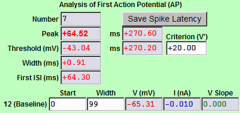
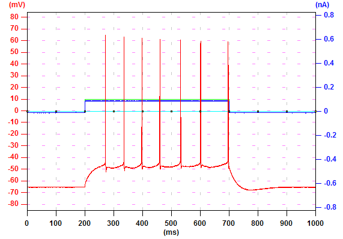

|
Ephic counts the number of action potentials (above 0 mV, 7 action potentials in
this example). To save peak latencies of all spikes, click "Save Spike Latency" and follow the instructions. The peak voltage and the peak latency of the first action potential are displayed. The threshold and the shreshold latency of the first action potential are displayed. The threshold is defined as the voltage at which dV/dt crosses 20 mV/ms. You can change this value by typing the new value in the "Criterion (V')" box and press "Enter". The half-height width of the first action potential is displayed. The first inter spike interval (ISI) is displayed. The baseline to define the height of the action potential is defined in measurement #12. In this example, the baseline is defined as the period from 0 to 99 ms. |
 |  |